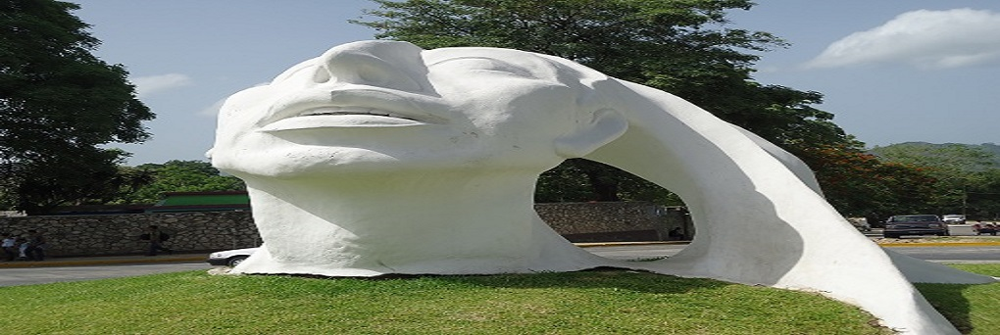
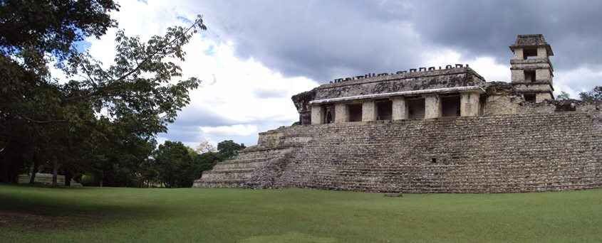
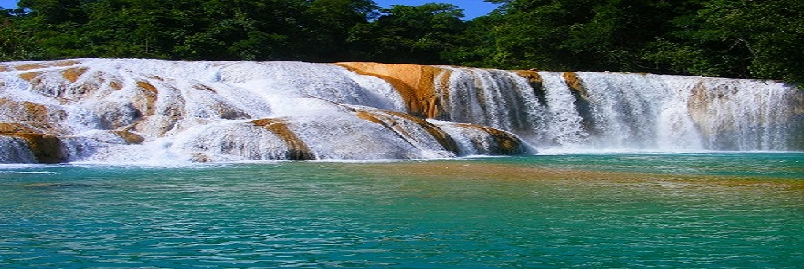
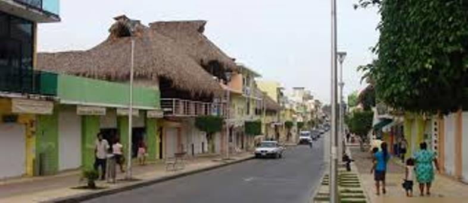
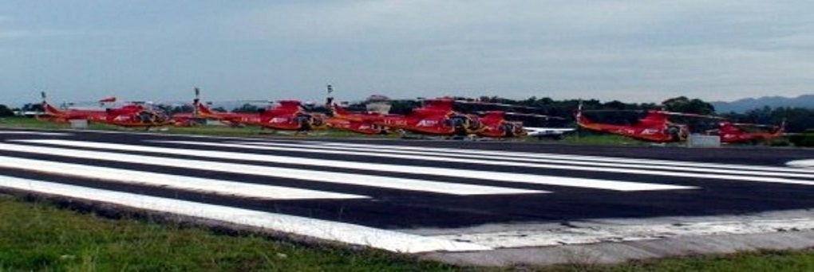
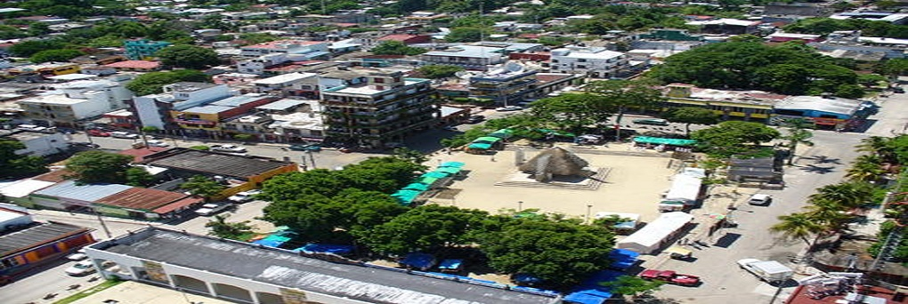

Palenque, una de las ciudades más notables del mundo maya, está en el corazón del sureste de México, al noreste del estado de Chiapas, en una zona de selva tropical alta donde abundan cascadas y ríos. ¡Simplemente fascinante!
Palenque se fundó a partir de una reducida aldea cuya actividad de supervivencia era la agricultura, posiblemente por el año 100 antes de Cristo dentro del período llamado Formativo (2500 a C Cristo a 300 d C.).
En el Clásico Temprano(300- 600 d C) evolucionó hasta llegar al Tardío (600-900), época en que alcanzó su máximo desarrollo, asi lo expresan sus construcciones e inscripciones.
En aquel entonces la región era conocida por el pueblo Chol como Otolum o "Tierra de Casas Fuertes"; por lo cual Fray Pedro Lorenzo de la Nada quien lo descubrio en 1567 lo tradujo como Palenque que significa "fortificación".
La comunidad de Santo Domingo de Palenque fue fundada en las cercanías de la zona arqueológica por el Siglo XVII. Sin embargo hacia finales de este el sitio fue reconocido como vestigio de una gran ciudad.
En 1974 cuando Don Ramón de Ordoñez y Aguilar visitó el sitio y reportó al Capitán General de Guatemala, se realizó una segunda visita al año siguiente determinándose que las ruinas eran de alto interés por lo que dos años después
el explorador y arquitecto Antonio Bernasconi fue enviado para detallar el lugar, se hizo acompañar por un contingente militar encabezado por el Coronel Antonio del Río.
Cuando exploraban la ciudad abandonada, las tropas derrumbaron varios muros para poder acceder al interior de las construcciones, produciendo un daño considerable a las mismas. A pesar de ello y a partir del trabajo de los
especialistas es que se ha tenido un mejor conocimiento del sitio, sus habitantes, su cultura y su participación como centro político en una región amplia del área maya.
Bernasconi dibujó el primer mapa moderno de la ciudad, e hizo copias de algunos bajorrelieves.
Palenque, una de las ciudades más notables del mundo maya, está al noreste del estado de Chiapas, en una zona de selva tropical alta donde abundan cascadas y ríos, por lo que la visita a la zona arqueológica puede complementarse con paseos por los alrededores. Los hallazgos encontrados en este sitio confirman que los mayas tenían una organización social y religiosa compleja, así como admirables conocimientos arquitectónicos, astronómicos y matemáticos. Además, los jeroglíficos de Palenque hablan de la historia militar de la ciudad, de las hazañas de sus gobernantes, de su calendario y sus rituales, aportando información invaluable sobre la cultura maya. En el poblado de Palenque, por su parte, hay una pequeña plaza central de ambiente agradable donde los locales se reúnen a conversar. A menos de una cuadra se ha montado un mercado de artesanías, donde puedes adquirir joyería en plata y todo tipo de textiles chiapanecos. En el poblado también hallarás todos los servicios necesarios para tu viaje (cajeros automáticos, hoteles, restaurantes, agencias de viajes, telefonía, etc.).